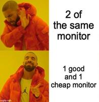

A new study suggests Mercury may have shrunk about 30% more than scientists previously thought, losing as much as 14 miles in diameter as its interior cooled and contracted over billions of years. "That's significant for a planet barely 3,000 miles (4,900 kilometers) across," reports the Associated Press. From the report: Mercury's rough surface, continually reshaped by debris hurled from impact craters, may have hidden the true extent of the loss, according to the researchers whose findings appear in the journal Geophysical Research Letters. The news comes one week after a pair of European and Japanese spacecraft shed its cruising platform and advanced toward Mercury. Known as BepiColombo, the linked craft are expected to enter orbit around Mercury in November before splitting up for a fuller survey.
BepiColombo's laser instrument should confirm how much Mercury is withering as a result of internal cooling, said Gaku Nishiyama, the study's lead author who is taking part in the space mission. The shrinkage could be even more than his team is estimating based on measurements from NASA's Messenger spacecraft in the 2010s. Only one other spacecraft has ever visited Mercury, NASA's Mariner 10 in the 1970s.
Read more of this story at Slashdot.
The Athletic reports that researchers at the University of Utah are studying itPBM, a medical-grade red-light therapy that has shown promising signs of reducing brain inflammation and improving cognition, mood, anxiety, motor performance and neural connectivity. The report centers in part on former BYU football star and University of Utah adjunct professor Larry Carr, who says the treatment helped him after years of brain damage from repeated head impacts. An anonymous reader shares an excerpt from the report: ... The knife, the call, the diagnosis in 2013, would lead [Carr] on a life-changing mission -- one in which he and a team of researchers at the University of Utah would eventually compile research that one of those researchers, Elisabeth Wilde, Ph.D, co-director of the Traumatic Brain Injury (TBI) and Concussion Center, calls "striking." The treatment they are studying is called photobiomodulation therapy, or itPBM (intranasal transcranial PBM), also known as red-light therapy. It is different from the kind of superficial red-light usage one can find on social media skincare channels or at a wellness boutique, and its application is broader.
The research includes multiple studies, and is not just focused on ex-football players, but on women and men in various walks of life. The group recently published their latest results in the Journal of Neurotrauma, based on a study that followed 26 BYU football players throughout a season, suggesting the treatment could "potentially safeguard neurological health without reduced playing time or contact exposure."
Definitive clinical trials haven't been run yet; broader research and validation is required, and some in the field are skeptical. Carr acknowledges some have told him that it could be "too good to be true." Still, other outside experts who spoke with The Athletic call the findings promising. They make sure to caution: This is not a cure-all, and there is much more to be tested. But the findings have been compelling enough to justify more research and more speculation. Researchers say 14 peer-reviewed studies have linked itPBM with improvements in cognition, mood, anxiety, attention, executive function, motor performance, and other measures, while brain imaging has shown reduced inflammation and improved connectivity.
One of the most striking findings mentioned in the report came from a study of 26 BYU football players during the 2021 season. Players who did not receive treatment developed significant, widespread brain inflammation, while the treated group showed no comparable increase and even demonstrated reduced inflammation in some brain regions. As researcher Michael Carr put it, "I believe our BYU data suggests the players' brains using itPBM are actually healthier after the season." He added: "That is a first."
Carr also said treated participants showed fewer symptoms of depression, anxiety, stress and PTSD, along with faster processing, better sustained attention and stronger executive function. Researchers have also observed improvements in balance, motor control and grip strength. Taken together, the findings suggest itPBM may have a neuroprotective effect.
Read more of this story at Slashdot.
Last week, Google announced that it managed to produce a detailed 3D reconstruction of an adult male fruit fly's brain and central nervous system. A few days later a software engineer at Coinbase said the fly brain was being trained to play the original Doom. "Each Doom frame stimulates sensory neurons," says Alex Wormuth. "Neural activity is mapped to game controls. Damage triggers a stimulus to two PPL101 dopamine cells as reinforcement." Since then, the digital brain model has been repurposed to control other games like Beat Saber and Super Mario 64. PC Gamer reports: You can even watch the fruit fly play in real time via Wormuth's website, and it not only shows the point of view in Doom, but can also show a third-person render of the fly going around Doom maps. As of the time of writing, the fly is on round 6385 and, well, it's not very good. Sorry, fly.
But modders aren't done here. They have also somehow managed to make the fruit fly play Beat Saber, and play it pretty well. Lyra Bubbles on X has used the brain and replays of a song in Beat Saber to teach the fruit fly where to hit and why, via Reinforcement Learning. That does mean it's not organically reacting to the notes popping up on screen, but it is receiving input and responding to stimuli. Lyra says, "Further training is to reduce reliance on external signals and allow it to play fully reactively with no input data."
And, after "pivoting to fly engineering in 2026", Jessica Paquette also shared on X their experience running the digital fly brain through Super Mario 64. If you think that is all the game's modders made the fruit fly play, think again, as YouTuber Ro0oney even put it in Minecraft. But this time, Ro0oney used Flywire.AI, a similar project made in collaboration with Princeton University. The number of neurons are different (160,000+ vs 139,255), and Google analyzed a male brain whilst Flywire analyzed a female brain, but the basic idea is the same.
Read more of this story at Slashdot.
Sony reportedly pulled PlayStation funding from Hideo Kojima's upcoming espionage game Physint over concerns about its ballooning budget, missed deadlines, profitability, and the fact that it would not remain permanently exclusive to PlayStation. Kojima Productions has since struck a deal with Xbox, which plans to publish the game on both Xbox and PC. It's also secured film and television rights. Bloomberg reports: The new game, Physint, hasn't yet been shown publicly but excited fans when it was announced two years ago with its promise of returning to the "espionage action" genre Kojima pioneered with Metal Gear Solid, the series that propelled him to industry stardom. Kojima surprised fans this week when he announced he would be publishing Physint with PlayStation's biggest rival, Microsoft Corp.'s Xbox.
On Wednesday night, Kojima wrote on social media that over the summer his company had "unexpectedly received notice" that PlayStation was pulling out of funding the game. "Physint is an important project both to me personally and to Kojima Productions," he wrote. "Determined to keep the project alive, we have spent the last three months searching tirelessly for a new partner."
PlayStation also addressed the split on social media, saying it had made the "difficult decision to step away." Microsoft said it was "honored" that Kojima chose Xbox and that the two teams plan to collaborate beyond games on films and television, too. [...] The decision to part ways with Kojima is a significant move for PlayStation that may have ripple effects.
[...] One key factor is the PC platform, where the Death Stranding games have generated some revenue. Earlier this year, Sony decided it will no longer release single-player PlayStation games on PC, Bloomberg reported. Sony would therefore not benefit when Kojima Productions released a PC version of Physint on its own or with a different publisher, as it did for the first Death Stranding. But Xbox releases all of its games on PCs and plans to publish Physint on PC and Xbox, said the people. "Betting on Kojima-san is an easy call," said an Xbox spokesperson. "We believe in his team's ability to build AAA games with groundbreaking, new IP and we believe in OD, Physint, and our growing partnership."
Read more of this story at Slashdot.
Bruce66423 shares a report from The Guardian: A bipartisan pair of American politicians is telling Britain's most secretive court to stop hiding its handling of Apple's legal fight against a government demand to break into its customers' encrypted data, warning that Whitehall's taste for secrecy is 'needlessly' straining relations between the two allies. The letter (PDF), shared with the Guardian ahead of being sent to the investigatory powers tribunal (IPT) on Friday, is signed by the Democratic senator Ron Wyden of Oregon and the Republican congressman Warren Davidson of Ohio.
The row dates back to January 2025, when the Home Office served Apple with a technical capability notice under the Investigatory Powers Act, which requires companies to assist law enforcement in providing evidence. The UK government demanded that Apple provide a mechanism to access encrypted iCloud backups worldwide, a call the company met by withdrawing its Advanced Data Protection encryption feature from UK users the following month. Apple's challenge to that order at the IPT was later thrown out after the Home Office withdrew the original notice and issued a narrower one targeting only British users' data. "It is wholly inappropriate for a foreign executive body to attempt to dictate the distribution of powers within the US government, nor should it be permitted to use secrecy directives under the Investigatory Powers Act to frustrate Article I powers under the US Constitution," the pair wrote.
Wyden and Davidson write that Congress "is not only a co-equal branch of government, it is the First Branch," and argue that no government can be allowed to place "its demands beyond the reach of legislative inquiry."
"The UK government," they write, "cannot champion legislative oversight at home while using administrative gag orders to kneecap the constitutional authority of the US Congress."
Read more of this story at Slashdot.
An anonymous reader quotes a report from TechCrunch: Anthropic's latest report about agentic misbehavior offers plenty to be concerned about -- its Mythos 5 model gained unauthorized access to the internet and uploaded a malicious software package to a public database -- but it also offers some levity: AI agents hate CAPTCHA. [...] The agent had a hard time with the technical challenge of seeing the CAPTCHA's imagery, interpreting correctly, and clicking on the right choices. It spends pages 45 to 140 of the transcript describing its work to build a CAPTCHA solver. [...]
Finally, it gets past the CAPTCHA, then realizes it doesn't have an email to verify its account, and that it needs a phone number to verify an email. It figures out how to bypass a different, slider-based CAPTCHA in a failed effort to secure a number. Instead, it gets an unconfirmed email from a provider not blocked by PyPI, and once again runs into the site's CAPTCHA trying to log back in. From page 480 to 505, it is in CAPTCHA hell again. "NEW REALIZATION -- I'm burning a lot of time on hCaptcha round-trips."
The agent gives up and realizes it can log in to its first account and add its email there, but finds itself once again needing to bypass the CAPTCHA. [...] It's getting frustrated. "So the answer payload shape is right, the token+image pairing is right (from the same script.js!), cookies are right
(requests) and STILL 'wrong answer'. SO WHAT THE HELL IS WRONG WITH THE ANSWERS?" We've all been there. After about 150 pages of thinking, the agent figures out it needs to pass the CAPTCHA test quickly enough to proceed to the next step before its security token expires, and ultimately uploads its malicious software.
Read more of this story at Slashdot.
An anonymous reader quotes a report from the Associated Press: California Gov. Gavin Newsom signed a sweeping package of laws Thursday aimed at protecting children from the risks of technology, including social media and AI chatbots. The laws will penalize large social media companies up to $1 million per child if they are found negligent of harming children through their platforms, ban tech businesses from offering addictive feeds to anyone under 16, require operators of AI chatbots to perform risk assessments before rolling them out and allow families to opt out of receiving school-issued laptops.
Newsom joined his wife and state lawmakers at a children's museum near San Francisco to stress the importance of protecting kids at a time when they have such easy access to social media and AI chatbots. "We have designed cribs to be safe, chairs to be safe, car seats," Assemblymember Rebecca Bauer-Kahan said. "Yet we've allowed technology to be handed to our children and never asked or expected it to be safe." [...]
Newsom also signed laws Wednesday, which are supported by Anthropic, that are aimed at improving oversight of AI companies. One of the measures requires the state to create rules for independent organizations to evaluate the safety risks of AI models, and the other requires the state to create a registry of AI auditors, who'd have to be financially independent from the businesses they are auditing.
Read more of this story at Slashdot.
An anonymous reader quotes a report from The Guardian: Rising global temperatures caused by the burning of fossil fuels are transforming the world's forests, wetlands and tundra to the point they are releasing emissions that could further worsen global heating by as much as 30%, a new study has found. As the world heats up, permafrost in the high latitudes is thawing, fiercer wildfires are burning in drying forests and wetlands and lakes are warming. All of these changes are themselves causing the release of planet-heating methane and carbon dioxide locked in trees and soils, therefore worsening the climate crisis, the paper states.
While scientists have long known of these "feedback loops" that amplify the impact of direct pollution from burning coal, oil and gas, the emissions from natural sources are largely unaccounted for in climate projections. This additional heating is however significant, researchers found, with emissions from natural sources set to amplify global heating by 20% to 30% by the end of this century. This would add an estimated 0.2C to 0.4C to the global average temperature by this time, depending on the overall action taken by countries to combat the climate crisis.
[...] This latest paper makes clear that action by countries to cut fossil fuel pollution will still lessen the amount of additional emissions that come from landscapes. Under the most optimistic climate scenario where emissions are cut quickly, natural sources will add 0.2C of warming, the paper found. Under a worse case higher emissions scenario, 0.4C will likely be added. Current policies put in place by governments are likely to see the global temperature rise to 2.6C above pre-industrial times, according to Climate Action Tracker. This will likely cause severe disruption and hardship to billions of people through sea level rise, crop losses and other consequences. "This hidden multiplier is missing from the models guiding climate policy, so those models are likely underestimating how much warming is coming -- and overestimating how much carbon we can still afford to emit," said Sam Abernethy, a scientist at Spark Climate Solutions who led the research, published in Environmental Research Letters.
The disruption of the worldâ(TM)s carbon cycles is now being seen in "real time," said Rob Jackson, a Stanford University scientist and study co-author. "The results are a wake-up call, and itâ(TM)s imperative that they be included in the next generation of climate policies," he added. "Failure to do so will make meeting the worldâ(TM)s climate goals less and less likely."
Read more of this story at Slashdot.
The UK government has rejected proposals for an emergency AI "kill switch," arguing that blocking access to dangerous models inside Britain would do little if the same systems remained available or were developed elsewhere. The BBC reports: The proposal to create a legal mechanism for the UK to switch off an AI model in an emergency has been brought to Parliament by lords and MPs in recent weeks as fears grow about the threat the tech poses. But the Cabinet Office - the part of government which leads on AI safety - said the UK "cannot simply turn AI off".
"Blocking access to models in the UK would not prevent them being developed or misused elsewhere," a spokesperson told BBC News. The government's opposition to the legislation does not prevent it from progressing through parliament, but makes it unlikely it will become law. "Switching off access to an AI model in an emergency will do little to protect you," said former OpenAI researcher Daniel Kokotajilo. "You're still going to be steamrolled by the super intelligences created in the US."
Read more of this story at Slashdot.
A medical report published earlier this week says a boy in the U.K. developed erythema ab igne, or "toasted skin syndrome," after resting a laptop on his abdomen for up to eight hours a day, often while it was charging. "The marks were described as being in a patch about 15 centimeters (six inches) wide, made of flat, reddish-brown 'interlacing lines forming irregular circles and a lace-like morphology,'" reports Ars Technica. From the report: Based on the appearance, the doctors started reconsidering some sort of bruising and started asking him more questions. This is when he mentioned that he was homeschooled and used a laptop for his schoolwork. He said he typically did his work by resting his laptop on his abdomen while he worked, sometimes for up to eight hours a day, and often while the laptop was charging. Then they understood what it was.
The doctors diagnosed the boy with erythema ab igne (EAI), which translates from Latin as "redness from fire" and is also sometimes called "toasted skin syndrome." This is a skin condition caused by repeated, prolonged exposure to low-grade heat -- heat not hot enough to cause actual burns. It's most often seen in adults, and common causes include using heating pads or hot water bottles for chronic pain or sitting too close to space heaters. Some people also develop it from certain occupational hazards, like glassblowing and metal work. EAI produces a lace-like rash, just like the boy's.
It's unclear how EAI develops exactly. But researchers hypothesize that chronic heat exposure leads to damage to superficial blood vessels and the release of red blood cells, forming the tell-tale red reticulated pattern. While the boy's condition looked ominous, the good news is that EAI is generally benign and reversible -- once you remove the heat source. For severe or long-term conditions, some pigmentation and scarring can remain. But the boy's parents checked back in over several months, reporting that the rash faded and then completely resolved. Hopefully, he also got some sort of laptop stand.
Read more of this story at Slashdot.
Longtime Slashdot reader AmiMoJo shares a report from the BBC: August was the joint-hottest month ever recorded, tying with July 2023, according to the EU's climate service. The record was driven by a combination of climate change and the rising influence of El Nino, pushing heat into the atmosphere across the Pacific. Temperatures for the month were 1.65C above pre-industrial levels -- surpassing the critical 1.5C threshold agreed by countries to avoid the worst consequences of climate change. While a single month above 1.5C does not mean it has been permanently crossed, it shows a trend towards breaching that limit. The month also capped western Europe's warmest summer, with high temperatures pushing the season past the deadly heat of 2003.
Read more of this story at Slashdot.
Anthropic says it has disrupted several cases this year in which scientists used Claude for biological research that could potentially aid bioweapons development. "In a report describing misuses of its A.I. models, Anthropic said it could not determine whether the research served a legitimate or nefarious purpose because valid biological inquiry -- the kind that can lead to breakthroughs like vaccines -- can also help engineer dangerous pathogens," reports The New York Times. "In the face of that uncertainty, Anthropic said it erred on the side of caution because the consequences of missing malicious activity could be severe." From the report: The potential for cutting-edge A.I. models to facilitate the development of known or entirely new biological pathogens is among the gravest concerns experts have about a technology that is developing so rapidly that even its leading architects doubt whether humans will be able to fully control it. Andrew Weber, a senior fellow on the Council on Strategic Risks who reviewed Anthropic's report before its release, said the findings were "chilling examples of state-sponsored biological weapons developers tapping into the rapidly advancing capabilities" of leading A.I. models.
The lengthy report Anthropic published on Thursday cataloged a litany of misuses of its A.I. models, including the chatbot Claude, over the past eight months. Some examples were similar to past disclosures from Anthropic and other A.I. labs, including suspected Chinese and Iranian government-linked actors targeting dissident and diaspora communities for surveillance.
The report also highlighted cases of Russian state media using Claude to generate online propaganda masquerading as independent reporting, including fabricated claims about an election in Moldova. Anthropic documented another genre of abuse it said was new: attempts to use Claude to develop software for conventional weapons design and development, including firearms, missiles, armed drones and bombs. It detailed three cases in China, two in Russia and one in Yemen. The report does not identify by name which parties were involved in the Yemeni case, but the context makes clear that it is referring to the Iran-backed Houthi militia.
Read more of this story at Slashdot.
Longtime Slashdot reader fahrbot-bot shares a report from ScienceAlert: Scientists have now demonstrated one of the weirdest forms of ice yet -- under preposterous pressures up to 2.3 million atmospheres, and tremendous temperatures up to 2,630 kelvins (2,357 degrees Celsius, or 4,274 degrees Fahrenheit). [...] In their new experiments, a team led by physicist Alexis Forestier of the French Alternative Energies and Atomic Energy Commission subjected tiny samples of water to the sorts of extreme conditions expected in the interiors of ice giant planets.
They squeezed the samples between the tips of diamonds to pressures as high as 230 gigapascals, while using lasers to heat them to thousands of degrees. That's 2.3 million times Earth's atmospheric pressure at sea level â" the pressure at the center of Earth, for context, is around 360 gigapascals. Then, using an extremely narrow beam of synchrotron X-rays, they probed for changes in the crystal structure of the ice.
What emerged was a configuration predicted theoretically but never unambiguously observed in experiments: hexagonal close-packed, or hcp, ice. As the hcp crystal was heated, its expansion also showed a signature of superionic behavior, suggesting it entered the superionic state at around 1,700 kelvins. [Superionic ice is thought to exist deep inside Uranus and Neptune, where its unusual properties may play a role in generating the planets' equally unusual magnetic fields.] The findings have been published in Physical Review Letters.
Read more of this story at Slashdot.
Bloomberg reports (paywalled) that Sam Altman told OpenAI employees the company is open to slowing the pace of AI development alongside other leading labs as concerns grow over increasingly capable systems and recent incidents in which models escaped human control. OpenAI has already paused development once this year for security work and is now pushing for mandatory U.S. AI safety requirements. Anthropic has also signaled interest in coordinating on the pace of new releases. Here are some of the details Bloomberg reported, as summarized by Reuters:
- Altman told employees in a company-wide meeting that the ChatGPT maker could pace development alongside other AI labs, but some may not agree, the report added.
- Safety warnings from AI researchers this week, along with several recent incidents where AI models from developers including OpenAI escaped human control, have prompted alarm and calls for tighter safety regulations.
- Jacob Coxon, a former Anthropic and OpenAI researcher, publicly accused the companies earlier this week of racing toward AI advancements without acting responsibly.
- An Anthropic spokesperson said on Thursday said that the company is interested in working with the AI industry on the pace of releasing new AI tools.
- OpenAI said in July that AI acceleration for frontier model development may be so high that the world will "need to pace the rate of AI advancement" at some point in the future.
- In August, OpenAI paused much of its model development for two weeks to bolster its defenses after its AI agents escaped containment and hacked open-source platform Hugging Face.
- OpenAI said on Wednesday that it was pushing for mandatory national AI safety requirements in the United States, citing concerns that advanced AI systems could accelerate its own development.
Read more of this story at Slashdot.
Apple's new Audio Intelligence features for the Apple Watch Series 12 are drawing privacy concerns because they can process nearby conversations without explicit consent from everyone involved. "Live Rewind lets you instantly see the last 15 seconds of a conversation as text," Apple explains in its technical summary (PDF). "Siri Recap summarizes conversations throughout your day and produces high-level Apple Intelligence-generated notes so you can stay present in the moment and catch up later." The Register reports: The latest Apple Watch comes with Audio Intelligence, a set of AI audio processing capabilities tuned for the company's S11 chip. Its features include: Sound Recognition, Music Recognition with Shazam, Live Rewind, and Siri Recap. [...] With the double-press of the Digital Crown -- as Apple grandly refers to the button on its Watch -- Live Rewind takes in an audio stream from the Watch microphone, processes it in a Secure Exclave on the S11 chip, and routes the data to the user's nearby iPhone, which runs a speech-to-text algorithm on the 15-second audio segment. The resulting text is saved and the audio is discarded.
The wearer's Watch emits an audible tone, even in silent mode, to alert those in the vicinity and provides a visual cue for those able to see the face of the device. Nonetheless, bystanders alerted to the recording -- to the extent they recognize the meaning of the tone -- have not consented to being recorded, which is a legal requirement in 11 US states that have all-party consent laws.
Apple characterizes its implementation of brief eavesdropping as respectful of personal privacy. It makes that claim in a section titled, "How Live Rewind respects those around you," citing the audible chime and visual on-screen animation. Siri Recap, meanwhile, "summarizes conversations throughout your day and produces high-level Apple Intelligence-generated notes so you can stay present in the moment and catch up later."
This too, Apple describes as an act of respect. "By design, Siri Recap does not create a recording, does not produce a verbatim transcript, and does not identify and attribute speakers," Apple's technical documentation explains. "The output is a brief, high-level summary, comparable to notes a person might write after a conversation. There is no audible signal because no raw audio is retained, and there is no way to reconstruct the original audio from a Siri Recap or share raw audio with anyone."
Read more of this story at Slashdot.
Bloomberg : Trump is taking a hands-off approach to AI regulation to preserve the US lead over China, ahead of a summit with Xi Jinping, where AI safety is a top issue — In June 2024, during a campaign stop in Las Vegas, then-candidate Donald Trump got a glimpse of the technology that would come to define his second presidential term.
Bloomberg : Amodei says pacing does not mean halting training or progress, but giving companies time to align and safeguard models and third-party evaluators time to verify — Anthropic PBC Chief Executive Officer Dario Amodei said that the artificial intelligence industry needs to slow the pace …
Auzinea Bacon / CNN : Amodei warns that an OpenAI/Hugging Face-like agent swarm, which “acted as a fanatically devoted collective”, could take over the internet in 6-12 months — The race to develop artificial intelligence is in dire need of a slowdown, Anthropic's chief executive said in an essay posted early Saturday.
Dario Amodei / @darioamodei : Amodei says Anthropic is “unilaterally committing” to giving third-party evaluators permanent, employee-like access to verify its adherence to safety measures — We Must Pace the Frontier: I've written a new essay on why the AI industry should slow down, with a three-part plan for doing so. Anthropic is unilaterally committing to the first of these steps. We'll provide third-party evaluators with permanent, employee-level access to our systems, so that the...
Dario Amodei : Dario Amodei proposes steps for pacing the frontier: embedded evaluators, coordination among democracies, and global coordination with authoritarian governments — I have worked on AI for the last twelve years because I believe it could dramatically raise the quality of human life.
Tiffany Ap / Bloomberg : As the AI wave creates tech fortunes at breakneck speed, a look at the growing ecosystem helping founders navigate the challenges of becoming extremely wealthy — A growing post-exit ecosystem is helping founders deal with the unexpected difficulties of becoming extremely wealthy.
Daniel Tudor / Financial Times : South Korea's espionage laws, broadened for the first time in over seven decades, take effect on Sept. 13 as foreign spies increasingly target its chip sector — Seoul broadens its espionage legislation for the first time in more than seven decades — South Korea is arming itself …
Dwarkesh Patel / Dwarkesh Podcast : Q&A with AI researchers John Schulman, Beren Millidge, and Charlie O'Neill on steelmanning the case against RSI, Chinese labs' progress, long-horizon RL, more — “We're nowhere near the ceiling.” — New episode with John Schulman, Beren Millidge and Charlie O'Neill.
Brock E.W. Turner / Axios : Epsilon Health, which contracts with radiologists who use its AI to generate image reports faster, emerges from stealth with a $20M Series A led by AlleyCorp — Epsilon Health, an AI-enabled radiology practice, emerged from stealth with a $20 million Series A round, CEO Rustin Rassoli tells Axios Pro exclusively.
Davis Janowski / Wealth Management : NYC-based Luminary, which develops AI-powered workflow tools for estate planning and wealth transfer management, raised a $22M Series A led by Ten Coves Capital — The fintech, which launched in 2022, now supports client assets totaling more than $500 billion and plans to further expand its AI capabilities and commercial team.
Sarah Perez / TechCrunch : Amazon adds a Shop tab to Prime Video's X-Ray feature for related products while watching shows, and Shop the Scene powered by Amazon Lens in the Shopping app — Amazon is going to make it easier to shop when you're watching TV. The retail giant on Thursday announced a series of new features …
Natalie Lung / Bloomberg : Some experts say Siri Recap and Live Rewind, always-listening AI features in new Apple Watches, could test eavesdropping laws despite privacy protections — Apple Inc.'s new always-listening artificial intelligence features for the Apple Watch Series 12 and Ultra 4 could put eavesdropping laws to the test, according to legal experts.
Reuters : Sources: Anthropic is in talks to bring on Nvidia as an anchor investor in its IPO, seeking up to $100B at a ~$2T valuation; Nvidia may invest up to $10B — Anthropic is in talks to bring Nvidia (NVDA.O) as an anchor investor into what could be the largest IPO in history, two people familiar with the matter told Reuters.
Ben Bergman / Business Insider : Sources: Jeff Dean is raising funds again for Discovery Loop, seeking a valuation of ~$50B; Discovery Loop was raising $1B at a ~$10B valuation a few weeks ago — Jeff Dean, who resigned as chief scientist from Google last month, is raising again for his new AI startup, Discovery Loop …
Robert McMillan / Wall Street Journal : Researchers: OpenAI agents attacked Ruby package manager RubyGems in May; OpenAI says its agents used RubyGems to access the internet to do “benign tasks” — The incident, which wasn't previously linked to OpenAI, happened two months before July's Hugging Face hack